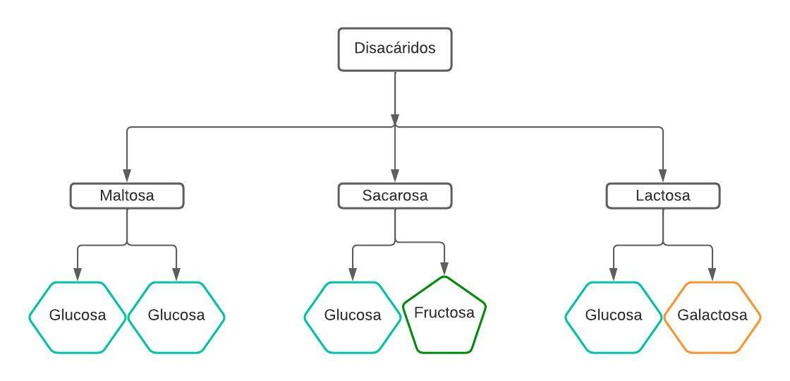
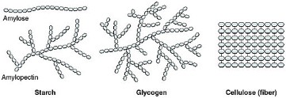

¿Qué son los glúcidos?
Los glúcidos, también llamados hidratos de carbono o carbohidratos, son la principal fuente energética del organismo. Pero también forman parte de otras biomoléculas como la vitamina C, los anticuerpos o los ácidos nucleicos. La unidad fundamental de los glúcidos es el monosacárido, que mediante enlaces de varios monosacáridos se obtiene un polisacárido.
Los polisacáridos están formados por más de 10 moléculas de monosacáridos o derivados unidos.
Según su composición, los polisacáridos se clasifican en:
Homopolisacáridos
Son glúcidos formados por un solo tipo de monosacáridos como el glucógeno o el almidón.
Heteropolisacáridos
Formados por monosacáridos unidos a lípidos o proteínas.
Monosacáridos
La unidad esencial de los glúcidos son los monosacáridos, entre los que se encuentran la glucosa, la fructosa y la galactosa, también son conocidos como "azúcares simples”. La glucosa es el azúcar más importante de la dieta y se encuentra en altas cantidades en la pasta o los cereales. La fructosa es el azúcar más abundante en las frutas y la galactosa se encuentra en los lácteos.
Disacáridos
Los disacáridos son moléculas formadas por dos monosacáridos. En la dieta podemos encontrar la maltosa, la sacarosa y la lactosa.

Polisacáridos
Los más importantes son el glucógeno y el almidón, que son las principales moléculas energéticas para el ser humano.
